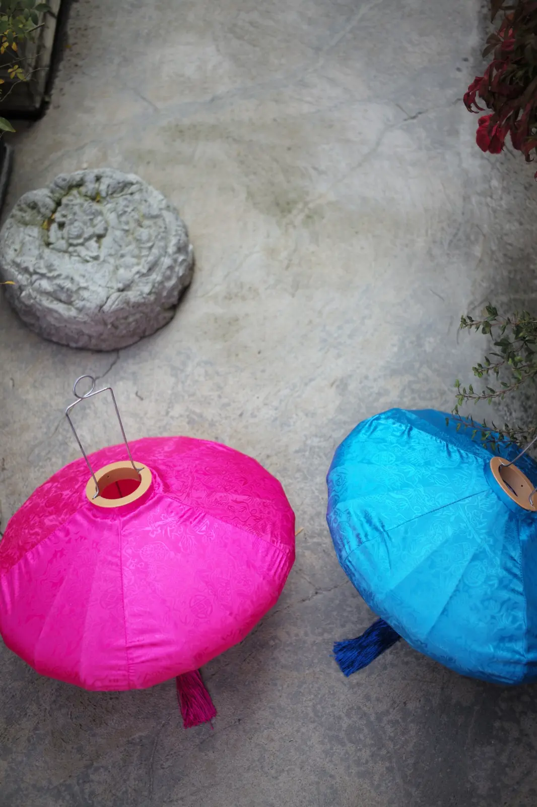
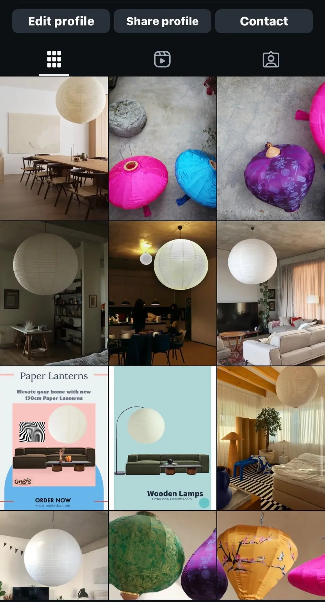

Growing up, research was never a formal process for me; it was part of my everyday life. As a child, I was surrounded by multiple perspectives and voices. Unlike many children who have one dominant figure to listen to, I had several—sometimes conflicting ones.
Curiosity as a Practice
This dynamic shaped me into a naturally sceptical individual. Whenever I heard something, I’d go home, dig deeper and double-check whether it was true. It was less about distrust and more about a deep desire to understand things as they truly were.
This tendency to investigate and confirm laid the foundation for what would later become a passion for research. In today’s world, especially with the overwhelming presence of social media, being able to navigate information is critical. Research isn’t just about verifying facts; it’s about being digitally fluent, discerning and secure in the choices we make.
“Research has always been a way of seeing—not merely a task.”
The Project That Sparked My UX Journey
My formal journey into UX research began unexpectedly. I had an idea for an online e-commerce platform specialising in Asian-inspired interior design elements and architectural structures. Living in Georgia, I noticed a visible demand for unique, simple and beautiful items—such as paper lanterns—that could transform a home.
The project started with extensive research. I searched widely and communicated with factories and suppliers around the world, including in China. The goal was to find partners who could meet our manufacturing and logistics needs while staying within budget.
After finding the right suppliers, the next challenge was logistics. Given my self-imposed deadline and the nature of transportation costs, we selected air freight. Shipping by sea, while often cheaper, involved lengthy declaration processes and hidden fees that made it less efficient for our needs.


While the products were en route, I realised that building an online store wasn’t simply another task; it was an entirely different challenge—one I found deeply engaging. The process was intense, but it never felt exhausting. In fact, it was the part of the venture I enjoyed most.
I began learning how to design a website, studying the user base I was targeting and focusing on creating an intuitive and enjoyable experience.
Discovering My Passion for UX
To my surprise, this part of the journey felt incredibly natural. I dived into choosing the right iconography, designing layouts and empathising with the user to make their experience seamless.
I paid close attention to details such as high-quality content and accessibility best practices. I wanted the design to be modern, responsive, functional and inclusive—an experience anyone could navigate effortlessly.
There were countless other steps involved in getting the shop operational, from managing finances to marketing. But none resonated with me as deeply as UX. It was a complex yet logical field, blending creativity with problem-solving.
This realisation marked a turning point. I didn’t simply want to design websites; I wanted to understand users, solve their pain points and create solutions that worked for them.
Looking Ahead
Reflecting on my journey, I see how research has always been part of who I am. From fact-checking as a child to managing the logistics of an e-commerce platform, and finally discovering the joy of UX design, the thread tying everything together is a desire to learn, empathise and improve.
UX research feels like the natural culmination of this lifelong curiosity, and I’m excited to see where this path leads next.